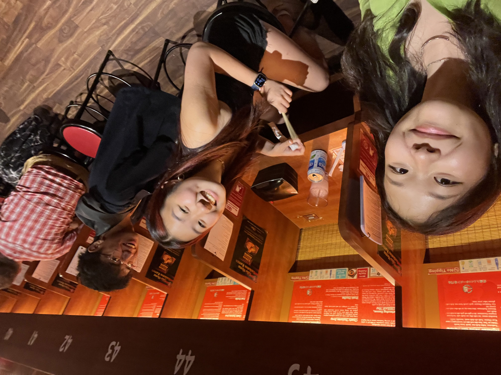
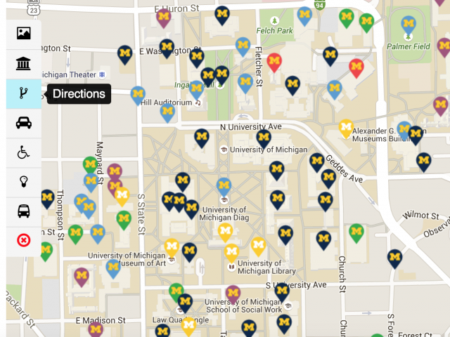
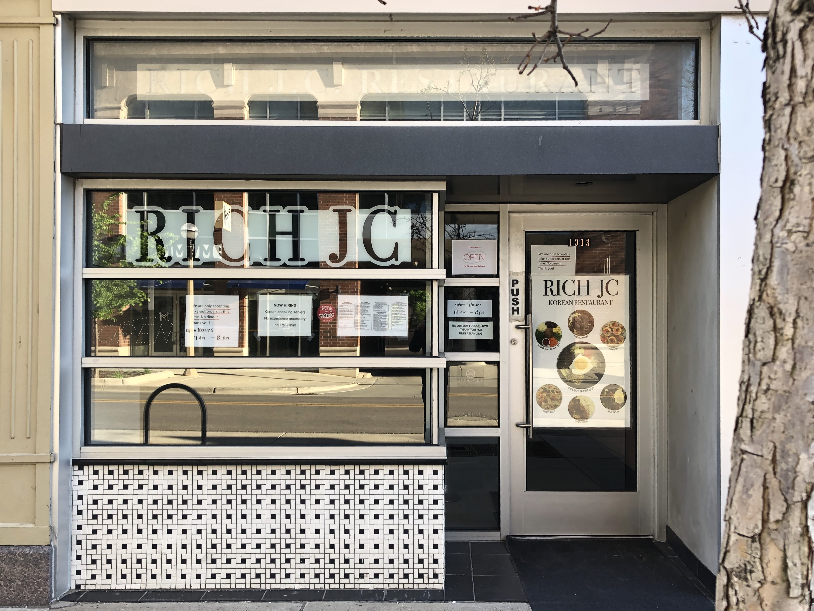
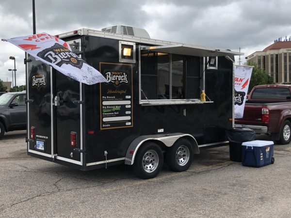
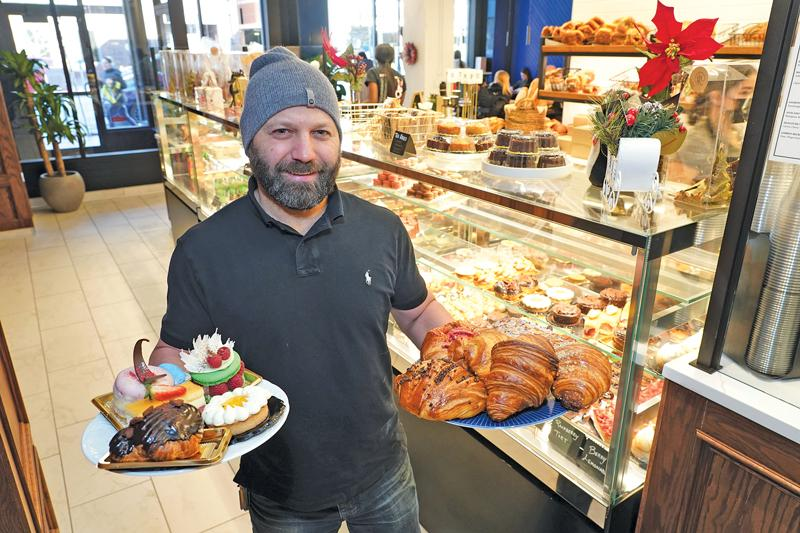
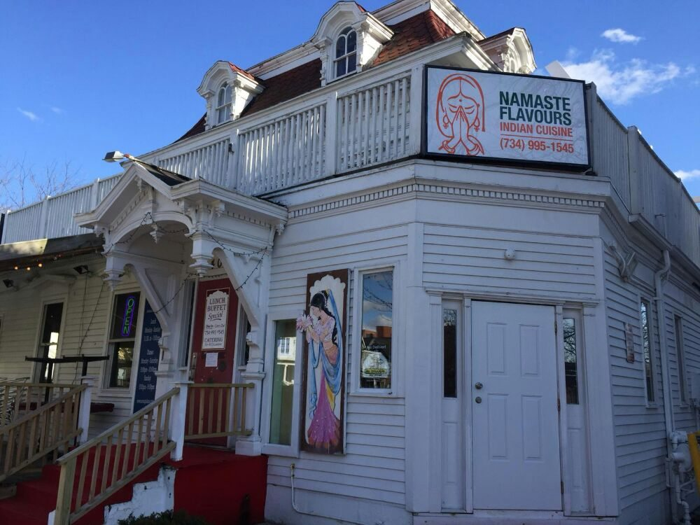

Introduction
As an amature food critic, I thought it would be important to start my own website to start my series of reviews to jumpstart my career. As someone whose parent's own a chinese restaurant and have helped tasted items for their menu, I felt like I would be good at judging and evaluating the taste of different dishes at restaurants. Additionally, as someone who loves to eat and also provide unsolicited opinions whenever I visit new food places, I thought this would be the perfect outlet for me
Why Michigan? Why Ann Arbor?
Coming from the tri-state area aka the best food epicenter in the world, I thought it wouldn't be interesting to highlight delicious food locations there. In fact, I encourage people who visit to get rid of their Yelp and Tripadvisor app and just explore. Sometimes the best restaurants are the ones that no one knows about yet. Yes, you want a bang for your buck when visiting a new area, but taking the time to take in the natural cultures in your local areas will really help you soak in the new place. And...food is the best way to learn about a new location. Usually in Ann Arbor, you are not indulging or "soaking up its culture". Instead, students are usually trying to get the best and fastest meals, which is why I feel like I would be able to provide more value
Here are my ratings of my top 5 restaurants
-

Rich Jc [Rating of 8/10]
-

Beirock College Taco Truck [Rating of 8/10]
-

Canelle Ann Arbor [Rating of 7.8/10]
-

Plate Sushi and Chicken [Rating of 7.5/10]
-

Namaste [7.5/10]